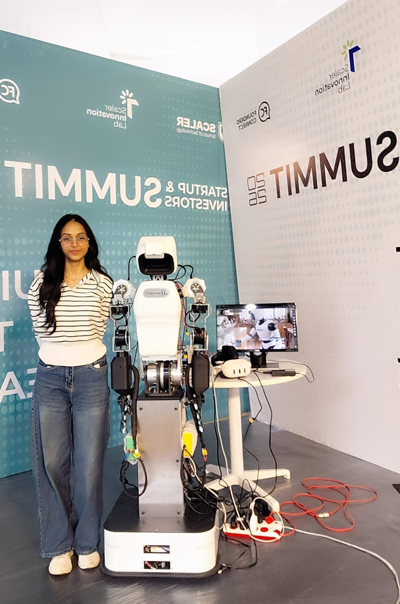

HELLO, I'M
Diya Parashar.
A first year student learning computer science, exploring ideas and figuring out what I enjoy building.
See My Work
01 / ABOUT ME
A little about me.
I'm a first year student at Scaler School of Technology, pursuing a BITS degree. I'm still exploring different parts of computer science and trying to figure out what I enjoy most.
I like building small projects because it's one of the easiest ways for me to understand what I'm learning. Outside of coding, I'm interested in startups, GTM, dance and debate.
02 / WHAT I KNOW
Skills
03 / PROJECTS
Projects
Expense Tracker
A small Python project for keeping track of daily expenses and practicing basic programming concepts.
PythonStudent Database
A basic SQL project where I practiced creating tables, storing information and working with student data.
SQLJava Practice
A collection of small Java programs made while learning classes, arrays and basic OOP concepts.
Java04 / THINGS I'M INTO
More about my interests.
Startups
I find startups interesting because they start with a simple idea and slowly turn it into something people actually use. I like learning about how founders identify problems, build their first product and figure out who their users are.
I'm especially interested in how small teams make decisions, experiment with ideas and grow without having everything figured out from the beginning.
GTM
I'm interested in Go-To-Market because building a product is only one part of the process. The other part is figuring out how the right people discover it, understand it and eventually decide to use it.
I want to learn more about customer research, positioning, marketing and how startups get their first few users.
Dance
Something I enjoy outside college and coding. It gives me a break from studying and is something I genuinely like spending time on.
Debate
I enjoy discussing ideas and looking at different perspectives. Debate has also helped me become more comfortable with explaining and defending my opinions.
05 / GET IN TOUCH
Let's connect.
If you want to talk about technology, startups, ideas or just connect, feel free to reach out.